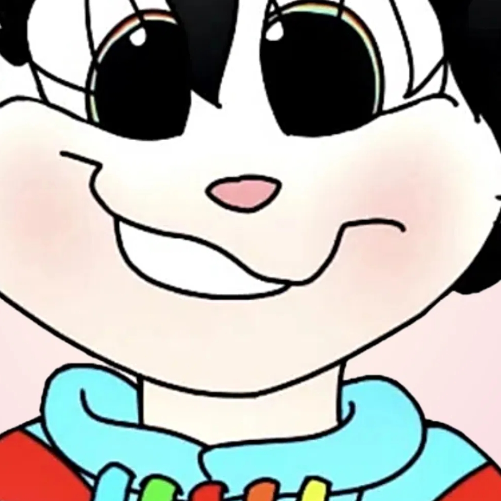

Creator of Mirmology and the Antibraincells tag, csa and cocsa cult surviving AUDHD BPD hosting OSDD being gremlin, NOT associated with the weird ass crk chococritters creepazoid and have in fact reported him before, known deplatformer of predators and absolutely unhinged, yours truly, Choco.
thine-super-choco-finity, tal cual estaba el 7 oct 2026 (los blogs de Choco llevan siempre un nombre variante de infinite proship choco). Si te lo tiran, todo para montarlo otra vez está aquí.
Título
The Syskid.
Descripción
Creator of Mirmology and the Antibraincells tag, csa and cocsa cult surviving AUDHD BPD hosting OSDD being gremlin, NOT associated with the weird ass crk chococritters creepazoid and have in fact reported him before, known deplatformer of predators and absolutely unhinged, yours truly, Choco.